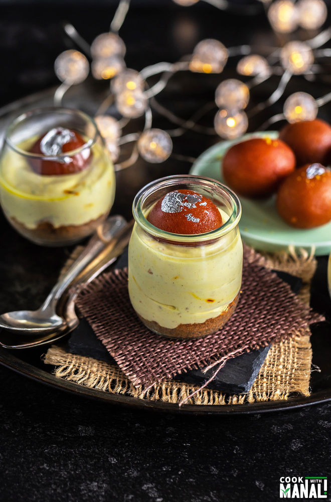

Gulab Jamun Shrikhand Jars
Gulab Jamun Shrikhand Jars have a cookie crust topped with creamy shrikhand and melt-in-mouth gulab jamuns! These pretty jars make the perfect festive treat!

Description
Gulab jamun (also spelled gulaab jamun; lit.'Rose water berry' or 'Rose berry') is a sweet confectionery or dessert, originating in the Indian subcontinent and a type of mithai popular in India, Pakistan, Nepal, the Maldives (where it is known as
gulab ki janu), and Bangladesh, as well as Myanmar. It is also common in nations with substantial populations of people with South Asian heritage, such as Mauritius, Fiji, Gulf states, the Malay Peninsula, Great Britain, South Africa, and the
Caribbean countries of Trinidad and Tobago, Guyana, Suriname, and Jamaica.
Ingredients
- 1.25 cups kesar pista shrikhand
- 6 cookies I used biscoff cookies
- 1 tablespoon unsalted butter melted & slightly cooled
- 4 gulab jamuns cut in half
- nuts, edible silver leaves optional, to garnish & decorate
Steps
- Add cookies to a food processor. I have used biscoff cookies here, you can use any cookie that you like.
- Pulse to crush the cookies and then transfer them to a bowl.
- Add melted butter to the bowl and mix it with the cookies
- Until the mixture resembles crumbs.
- Now take the jars and add around 2 teaspoons cookie crumbs in each serving glass. Press lightly using your fingers.
- Pipe shrikhand into the jars above the cookie crust. I have used a piping bag here, you can simply use a spoon.
- Cut the gulab jamuns into half and top each jars with cut jamun.
- Repeat with remaining jars. Place the jars in the refrigerator to chill for few hours. Shrikhand becomes thick as it chills so it’s important to chill.
- Once chilled, serve immediately. You may garnish with nuts or decorate with edible silver leaves!